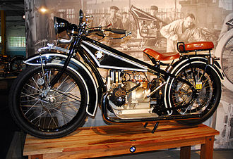

BMW

Bayerische Motoren Werke AG, commonly referred to as BMW, is a German multinational company which produces luxury vehicles and motorcycles. The company was founded in 1916 as a manufacturer of aircraft engines, which it produced from 1917 until 1918 and again from 1933 to 1945. Automobiles are marketed under the brands BMW, Mini and Rolls-Royce, and motorcycles are marketed under the brand BMW Motorrad. In 2015, BMW was the world's twelfth-largest producer of motor vehicles, with 2,279,503 vehicles produced. The company has significant motorsport history, especially in touring cars, Formula 1, sports cars and the Isle of Man TT. BMW is headquartered in Munich and produces motor vehicles in Germany, Brazil, China, India, South Africa, the United Kingdom, the United States and Mexico. The Quandt family are long-term shareholders of the company (with the remaining shares owned by public float), following brothers Herbert Quandt and Harald Quandt's investments in 1959 which saved the company from bankruptcy.
History
Bayerische Flugzeugwerke AG was formed in 1916. This company was renamed to Bayerische Motoren Werke (BMW) in 1922. However the name BMW dates back to 1913, when the original company to use the name was founded by Karl Rapp (initially as Rapp Motorenwerke GmbH). BMW's first product was a straight-six aircraft engine called the BMW IIIa. Following the end of World War I, BMW remained in business by producing motorcycle engines, farm equipment, household items and railway brakes. The company produced its first motorcycle, the BMW R 32 in 1923. BMW became an automobile manufacturer in 1928 when it purchased Fahrzeugfabrik Eisenach, which, at the time, built Austin Sevens under licence under the Dixi marque.[3] The first car sold as a BMW was a rebadged Dixi called the BMW 3/15, following BMW's acquisition of the car manufacturer Automobilwerk Eisenach. Throughout the 1930s, BMW expanded its range into sports cars and larger luxury cars. Aircraft engines, motorcycles, and automobiles would be BMW's main products until World War II. During the war, against the wishes of its director Franz Josef Popp[citation needed], BMW concentrated on aircraft engine production using forced labor consisting primarily of prisoners from concentration camps, with motorcycles as a side line and automobile manufacture ceased altogether. BMW's factories were heavily bombed during the war and its remaining West German facilities were banned from producing motor vehicles or aircraft after the war. Again, the company survived by making pots, pans, and bicycles. In 1948, BMW restarted motorcycle production. BMW resumed car production in Bavaria in 1952 with the BMW 501 luxury saloon. The range of cars was expanded in 1955, through the production of the cheaper Isetta microcar under licence. Slow sales of luxury cars and small profit margins from microcars meant BMW was in serious financial trouble and in 1959 the company was nearly taken over by rival Daimler-Benz. A large investment in BMW by Herbert Quandt and Harald Quandt resulted in the company surviving as a separate entity. The BMW 700 was successful and assisted in the company's recovery.
Branding
The name BMW is an abbreviation for Bayerische Motoren Werke (German pronunciation: [ˈbaɪ̯ʁɪʃə mɔˈtʰɔʁn̩ ˈvɛɐ̯kə]). This name is grammatically incorrect (in German, compound words must not contain spaces), which is why the name's grammatically correct form Bayerische Motorenwerke (German pronunciation: [ˈbaɪ̯ʁɪʃə mɔˈtʰɔʁn̩vɛɐ̯kə] (About this soundlisten)) has been used in several publications and advertisements in the past. Bayerische Motorenwerke translates into English as Bavarian Motor Works.The suffix AG, short for Aktiengesellschaft, signifies an incorporated entity which is owned by shareholders, thus akin to "Inc." (US) or PLC, "Public Limited Company" (UK). The terms Beemer, Bimmer and Bee-em are sometimes used as slang for BMW in the English language and are sometimes used interchangeably for cars and motorcycles.
Logo
The circular blue and white BMW logo or roundel evolved from the circular Rapp Motorenwerke company logo, which featured a black ring bearing the company name surrounding the company logo, on a plinth a horse's head couped.
 BMW retained Rapp's black ring inscribed with the company name, but adopted as the central element a circular escutcheon bearing a quasi-heraldic reference to the coat of arms (and flag) of the Free State of Bavaria (as the state of their origin was named after 1918), being the arms of the House of Wittelsbach, Dukes and Kings of Bavaria However as the local law regarding trademarks forbade the use of state coats of arms or other symbols of sovereignty on commercial logos, the design was sufficiently differentiated to comply, but retained the tinctures azure (blue) and argent (white).
BMW retained Rapp's black ring inscribed with the company name, but adopted as the central element a circular escutcheon bearing a quasi-heraldic reference to the coat of arms (and flag) of the Free State of Bavaria (as the state of their origin was named after 1918), being the arms of the House of Wittelsbach, Dukes and Kings of Bavaria However as the local law regarding trademarks forbade the use of state coats of arms or other symbols of sovereignty on commercial logos, the design was sufficiently differentiated to comply, but retained the tinctures azure (blue) and argent (white).
Slogan
he slogan 'The Ultimate Driving Machine' was first used in North America in 1974.In 2010, this long-lived campaign was mostly supplanted by a campaign intended to make the brand more approachable and to better appeal to women, 'Joy'. By 2012 BMW had returned to 'The Ultimate Driving Machine'.
Motorcycles
BMW began production of motorcycle engines and then motorcycles after World War I.Its motorcycle brand is now known as BMW Motorrad. Their first successful motorcycle after the failed Helios and Flink, was the "R32" in 1923, though production originally began in 1921. This had a "boxer" twin engine, in which a cylinder projects into the air-flow from each side of the machine. Apart from their single-cylinder models (basically to the same pattern), all their motorcycles used this distinctive layout until the early 1980s. Many BMW's are still produced in this layout, which is designated the R Series.  The entire BMW Motorcycle production has, since 1969, been located at the company's Berlin-Spandau factory.
Visit Us On